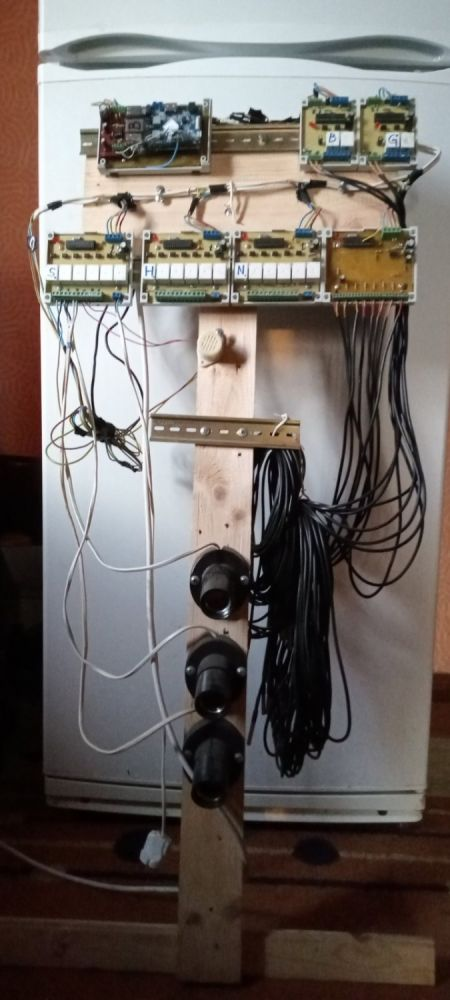
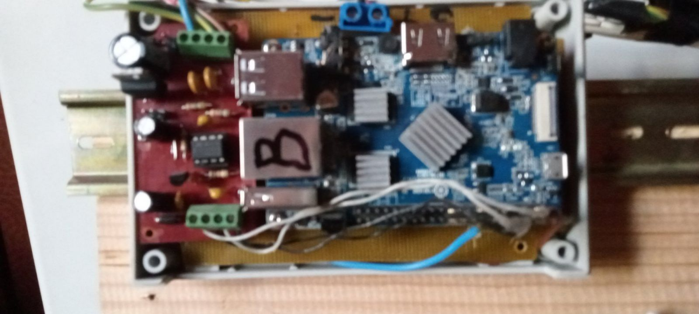
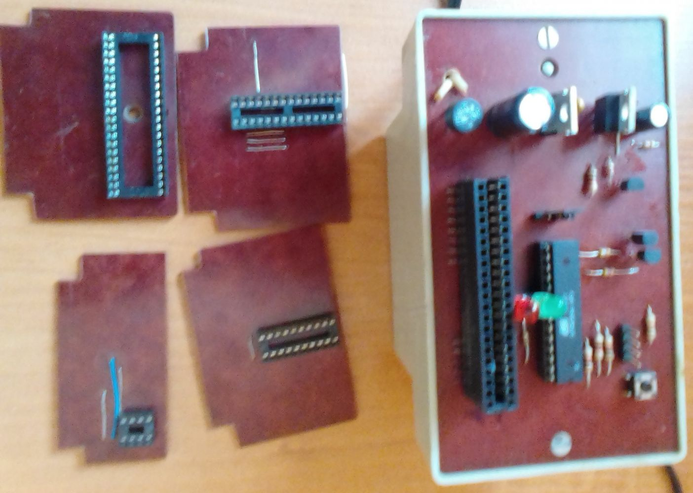
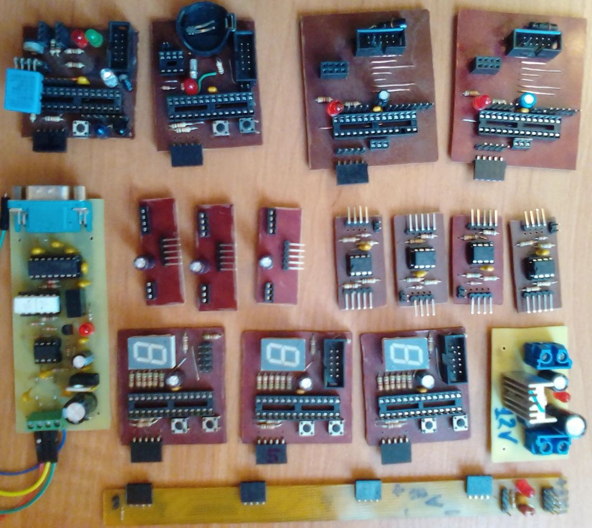
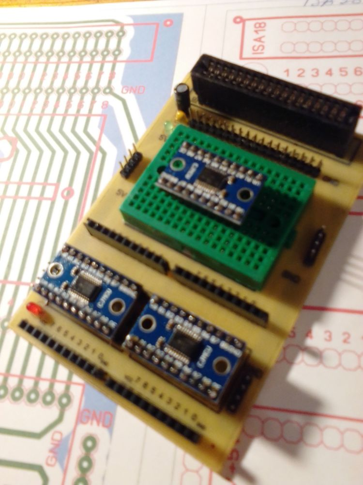

Участвовал в обсуждениях программ на программируемых калькуляторах в журнале «Наука и жизнь». Написание расчётных программ для курсовых и домашних задач в студенческие годы. Изучение алгоритмизации и программирования в целом.
Написание симулятора для этого калькулятора на языке программирования Бейсик под ПК РК86.
Имелись в наличии модели ПК «Криста» и МВЦ «Партнёр». Изучил на нём Бейсик, Forth, ассемблер 8080. На Бейсике созданы: электронные таблицы, программы для расчётов по курсовым работам, анализатор игр. Разрабатывал модули расширения для этого ПК.
Язык FORTH был изучен на уровне ассемблера 8080 и модифицировался мной несколько раз. На ассемблере 8080 были созданы: база данных — картотека статей журнала «Радио», свой вариант языка высокого уровня СКАТ, создающий текст ассемблерного листинга для дальнейшей компиляции. Создана мини-операционная система для хранения программ на кассетном магнитофоне и работе с этими «дисками» на уровне файлов.
Участие и отметка за оригинальность конкурса DUMCOR журнала «Радио» № 1992-7-23. Также были написаны с нуля игры: «Змейка» и «Тетрис».
При обучении в ВУЗе мной были созданы: показательная экспертная система определения болезней в диалоговом режиме. Был изучен Паскаль ДВК и несколько диалектов Бейсика, ОС Рафос — аналог DOS, ассемблер i86 и множество прикладных программ и оборудования. На ассемблере IBM PC был создан драйвер русской клавиатуры ввода и вывода.
На TurboBasic была написана и защищена на отлично дипломная работа по расчёту и анализу кормления сельхоз животных при массовых заболеваниях. Отмечена как первая дипломная работа в СССР по ветеринарии с применением программирования.
Программист на предприятии заготовки и хранения зерна
Самостоятельная разработка с 1995 года комплекса программного обеспечения: изначально с применением электронных таблиц SuperCalk (файлы, макросы, автоматизация), с дальнейшим переводом на Dbase 3-4, FoxBASE, FoxPro DOS и Windows, Visual FoxPro 3-9 версий.
Комплекс ПО для зернового предприятия
Программный комплекс включал: расчётное ПО по бухгалтерии, системе расчётов и подработки зерна, работе с клиентами и договорами, заработной плате, работе с пайщиками, шифрованной отчётности для проверяющих органов, небольшие программы для сотрудников и обслуживающее ПО с утилитами. Документооборот выводился в Excel, WinWord, OpenOffice и стандартными средствами VFP.
Создана система автоматического ввода данных с промышленных грузовых весов по RS232. Весь комплекс работал в сети с единой базой данных на специальном сервере под управлением Linux Slackware.
В плане администрирования создана система автосохранения всех данных, почтовая система получения электронной почты предприятия и автосортировки по сотрудникам, работа с учётом Интернет (трафик предприятия был 150 МБ в месяц), система документооборота, различные утилиты и скрипты. Созданы утилиты для построения интерактивной справочной системы, восстановления баз данных, учёта работы пользователей в сети и многое другое. Выполнялось полное обслуживание и ремонт всей оргтехники.
Коммерческие продукты и ЧП
Были созданы коммерческие продукты и зарегистрировано ЧП по их продвижению. Разработаны на заказ и внедрены программные продукты для предприятий водоканала, райсельхозснаба, районной мастерской по ремонту сельхозтехники, крупных колхозов и совхозов, частников и фермеров. Система анализа прайс-листов Excel поставщиков и автоматический их парсинг в систему учёта коммерческой медицинской аптеки.
Все продукты разработаны на Visual FoxPro и имели инсталлятор и развитую интерактивную справочную систему, инструкцию по использованию и сопровождение с обучением. Был создан сайт для продвижения своих работ. Некоторые из этих продуктов работают по сей день, более 20 лет.
Для упрощения создания FORTH-системы с помощью FoxPro создан автоматический генератор и тестировщик построения текстов шитого кода на языке ассемблера.
Как программист и системный администратор Пенсионного фонда участвовал в создании компьютерной сети (аналоговой, коаксиал) по собственной инициативе на Win3.11. Установлена сеть и соответствующее программное обеспечение. Для инспекторов и руководства созданы программы тестирования баз данных на предмет правильности ввода и актуальности данных, инструменты более простого и качественного анализа данных, фильтры построения отчётов и выборок, построение документооборота. Выполнялось полное обслуживание всей оргтехники и обучение.
В течение 4 лет самостоятельно проводил доставку, сборку и продажу ПК, телевизоров. Ремонт и обучение, обслуживание и консультации как предприятий, так и частных лиц.
Тестирование новых моделей и сборка ПК, ремонт, доставка и обслуживание, обучение, установка ПО, операционных систем и драйверов. Самостоятельно разрабатывал автозапускаемые сборники утилит с меню на DVD-дисках для тестирования и обслуживания ПК, автоустановки ПО, восстановления данных.
Выполнял ремонт, тестирование и заправку картриджей для порошковых принтеров и ксероксов. Проводил видеомонтаж и обработку видео под заказ с перезаписью с видеокассет на DVD-диски с меню. Заменял администраторов на время отпусков по работе в провайдерском интернет-центре. Проводил анализ, ремонт и сборку б/у компьютеров. Имел поощрения за рационализаторскую деятельность.
Обслуживание сети, сервера, камер видеонаблюдения и их работы в YouTube, создание и хранение архивов данных в автоматическом режиме. Как WEB-программист принимал участие в улучшении внешнего вида сайтов, создании дополнительных опций, в том числе с применением сервисов Google и совместной работе с создателями движков интернет-магазина. Также модифицировал интернет-магазины и лендинги услуг и товаров этой фирмы.
Работа велась с применением HTML, CSS, PHP, JQUERY, MySQL. Был создан мини-сервер для внутренних работ на основе мини-ПК OrangePi PC с Linux Debian.
Изучал и разрабатывал проекты на микроконтроллерах с 2007 года. Создал множество макетных плат для изучения МК AVR, PIC, STM8, STM32, а также плат расширения к этим макеткам. Были и коммерческие разработки для фирмы, где работал, и для своих знакомых.
Зимняя автоматика для собственной кролиководческой фермы — 16 модулей автонагрева в зимний период. FUSE-доктор для разлочивания МК AVR — только плата и конструкция. Инкубаторы разные. Управление камерами-обманками. Создан пакет макетных плат для построения и изучения сети из микроконтроллеров с применением радиоканала, RS485, UART и различных переходников, оптоизоляторов и прочее. Разрабатывался и мини-ПК на основе процессоров Intel 8080 и 8085 — ностальгия :)
Под заказ разработан и создан с нуля прибор для восстановления прошивок нескольких видов картриджей лазерных принтеров с индикацией и меню выбора модели принтера.
Система для экономии электроэнергии при использовании водонагревателя. Система автоматизации работы с водоснабжением двора из обычного колодца, уровень которого понижался ниже критического в сильную жару — контроль уровня воды, набор воды в резервуары, кондиционирование кроликофермы в сильную жару, слежение за всеми уровнями, несколько режимов работы. Создана домашняя охранная система с применением датчиков движения и герконов, камер видеонаблюдения и обманок, системы оповещения.
Разработана коммерческая система автоматизации умного дома — отопление со взаимоучётом нескольких котлов, жидкостных солнечных батарей, бани, бассейна и хозяйственных построек. Несколько контуров отопления — на каждую комнату загородного особняка. Использовалось большое количество датчиков, реле, сервокранов. Как удлинитель использовался радиоканал на NRF24. Собственный протокол обмена между узлами сети на основе RS485. На DIN-рейку. Центральным узлом являлся OrangePi PC с Linux Debian и OpenHAB. Работа, обслуживание и тестирование через интернет, с локального ПК или смартфона. Дополнительно были разработаны переходники, тестовые платы, блоки питания, конвертеры и изоляторы сигналов. Система разрабатывалась с нуля под заказ.
Все разработки были на языках ассемблера, микроПаскале, языке С. Использовались P-CAD, SprintLayout, KiCAD, DipTrace, Specctra. Разработка и изготовление печатных плат, схемотехника и подбор-приобретение элементной базы велась самостоятельно, в домашних условиях. Имелась полностью укомплектованная своя лаборатория с необходимыми приборами, материалами и инструментами для проведения всех работ.








